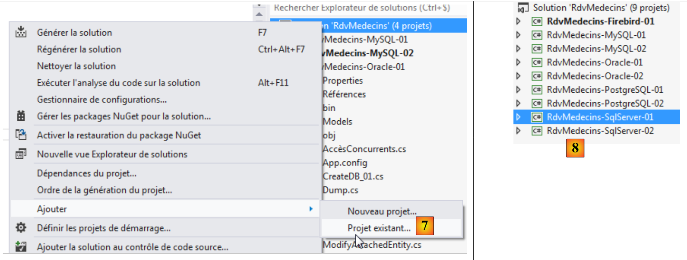
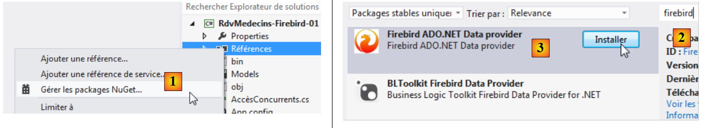
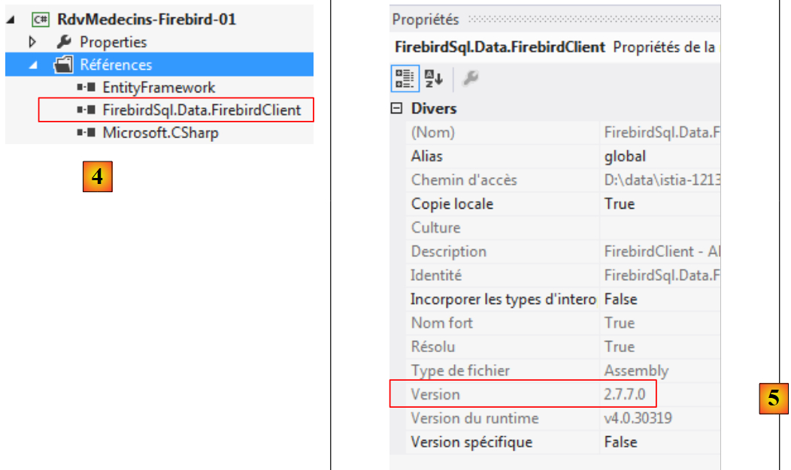
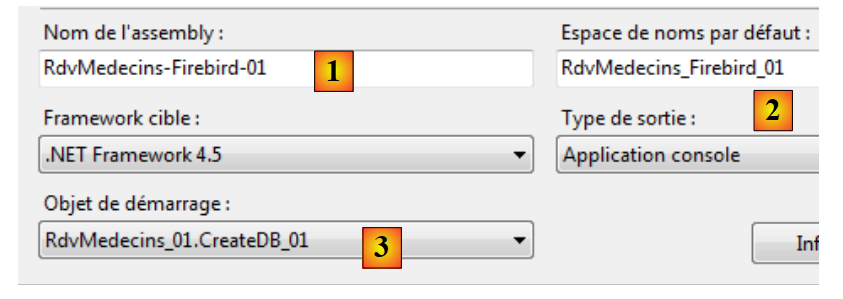
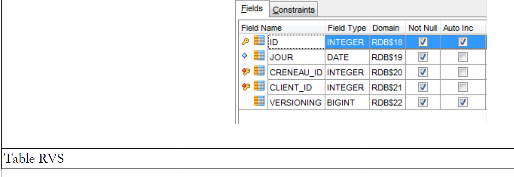
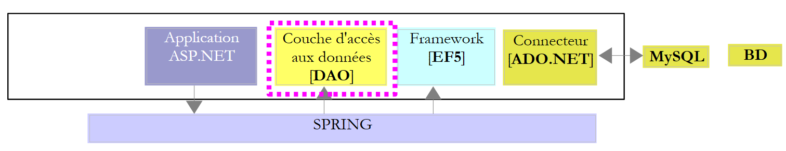
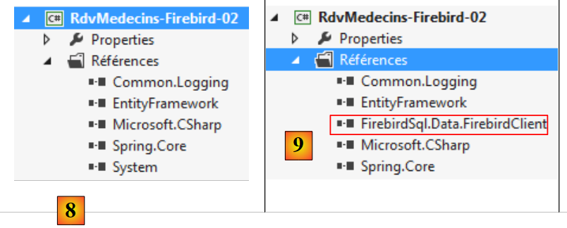
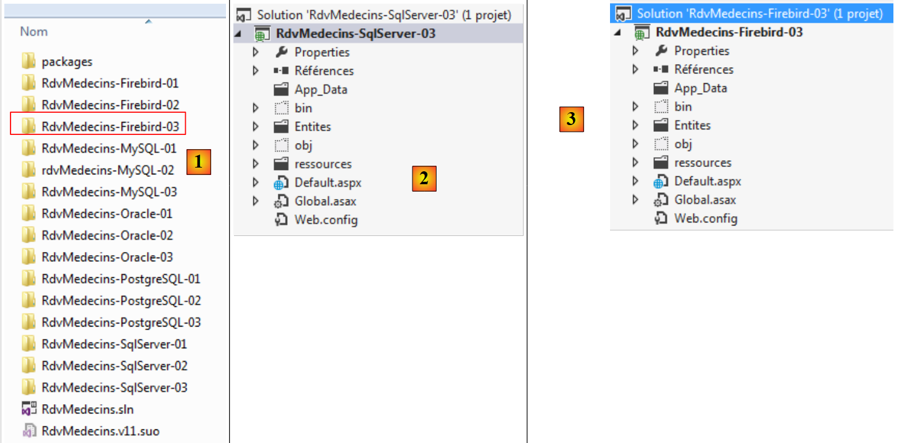

7. Etude de cas avec Firebird 2.1
7.1. Installation des outils
Les outils à installer sont les suivants :
- le SGBD : [http://www.firebirdsql.org/en/firebird-2-1-5/] ;
- un outil d'administration : EMS SQL Manager for InterBase/Firebird Freeware [http://www.sqlmanager.net/fr/products/ibfb/manager/download].
Dans les exemples qui suivent, l'utilisateur est sysdba avec le mot de passe masterkey.
Lançons Firebird puis l'outil [SQL Manager Lite for Firebird] avec lequel on va administrer le SGBD.
 |
- en [1], nous lançons le SGBD Firebird à partir du Menu Démarrer. Ici, le SGBD n'a pas été installé comme un service Windows ;
- en [2], le service est démarré. Une icône s'est installée en bas à droite de l'écran. Avec un clic droit sur celle-ci, on peut arrêter le SGBD.
Nous lançons maintenant l'outil [SQL Manager Lite for Firebird] avec lequel on va administrer le SGBD [3].
 |
- en [4], nous créons une nouvelle base ;
- en [5], on accepte ;
 |
- en [5], on se connecte en tant que SYSDBA / masterkey ;
- en [6], on désigne l'emplacement du fichier qui va être créé. En effet, la base va être créée dans un unique fichier ;
- en [7], on valide l'ordre SQL qui va être exécuté ;
 |
- en [8], la base a été créée. Elle doit maintenant être enregistrée dans [EMS Manager]. Les informations sont bonnes. On fait [OK] ;
- en [9], on s'y connecte ;
- en [10], [EMS Manager] affiche la base, pour l'instant vide.
Nous allons maintenant connecter un projet VS 2012 à cette base.
7.2. Création de la base à partir des entités
Nous commençons par dupliquer le dossier du projet [RdvMedecins-SqlServer-01] dans [RdvMedecins-Firebird-01] [1] :
 |
- en [2], dans VS 2012, nous supprimons le projet [RdvMedecins-SqlServer-01] de la solution ;
 |
- en [3], le projet a été supprimé ;
- en [4], on en rajoute un autre. Celui-ci est pris dans le dossier [RdvMedecins-Firebird-01] que nous avons créé précédemment ;
 |
- en [5], le projet chargé s'appelle [RdvMedecins-SqlServer-01] ;
- en [6], on change son nom en [RdvMedecins-Firebird-01]
 |
- en [7], on rajoute un autre projet à la solution. Celui-ci est pris dans le dossier [RdvMedecins-SqlServer-01] du projet que nous avons supprimé de la solution précédemment ;
- en [8], le projet [RdvMedecins-SqlServer-01] a réintégré la solution.
Le projet [RdvMedecins-Firebird-01] est identique au projet [RdvMedecins-SqlServer-01]. Il nous faut faire quelques modifications. Dans [App.config], nous allons modifier la chaîne de connexion et le [DbProviderFactory] qu'on doit adapter à chaque SGBD.
<!-- chaîne de connexion sur la base -->
<connectionStrings>
<add name="monContexte" connectionString="User=SYSDBA;Password=masterkey;Database=D:\data\istia-1213\c#\dvp\Entity Framework\databases\firebird\RDVMEDECINS-EF.GDB;DataSource=localhost;
Port=3050;Dialect=3;Charset=NONE;Role=;Connection lifetime=15;Pooling=true;MinPoolSize=0;MaxPoolSize=50;Packet Size=8192;ServerType=0;" providerName="FirebirdSql.Data.FirebirdClient" />
</connectionStrings>
<!-- le factory provider -->
<system.data>
<DbProviderFactories>
<add name="Firebird Client Data Provider" invariant="FirebirdSql.Data.FirebirdClient" description=".Net Framework Data Provider for Firebird" type="FirebirdSql.Data.FirebirdClient.FirebirdClientFactory, FirebirdSql.Data.FirebirdClient, Version=2.7.7.0, Culture=neutral, PublicKeyToken=3750abcc3150b00c" />
</DbProviderFactories>
</system.data>
- ligne 3 : l'utilisateur et son mot de passe, ainsi que le chemin complet de la base Firebird ;
- lignes8-10 : le DbProviderFactory. La ligne 9 référence une DLL [FirebirdSql.Data.FirebirdClient] que nous n'avons pas. On se la procure avec NuGet [1] :
 |
- en [2], dans la zone de recherche on tape le mot clé firebird ;
- en [3], on choisit le paquetage [Firebird ADO.NET Data Provider]. C'est un connecteur ADO.NET pour Firebird ;
 |
- en [4], la nouvelle référence ;
- en [5], dans [App.config], il faut mettre la version correcte de la DLL. On la trouve dans ses propriétés.
Dans le fichier [Entites.cs], il faut adapter le schéma des tables qui vont être générées :
[Table("MEDECINS")]
public class Medecin : Personne
{...}
[Table("CLIENTS")]
public class Client : Personne
{...}
[Table("CRENEAUX")]
public class Creneau
{...}
[Table("RVS")]
public class Rv
{...}
Ici, les tables n'ont pas de schéma.
Nous configurons l'exécution du projet :
 |
- en [1], on donne un autre nom à l'assembly qui va être généré ;
- en [2], ainsi qu'un autre espace de noms par défaut ;
- en [3], on désigne le programme à exécuter.
A ce stade, il n'y a pas d'erreurs de compilation. Exécutons le programme [CreateDB_01]. On obtient l'exception suivante :
On se rappelle avoir eu la même erreur avec MySQL, Oracle et PostgreSQL. C'est lié au type du champ Timestamp des entités. Nous faisons la même modification qu'avec les deux SGBD précédents. Dans les entités, nous remplaçons les trois lignes
[Column("TIMESTAMP")]
[Timestamp]
public byte[] Timestamp { get; set; }
par les suivantes :
[ConcurrencyCheck]
[Column("VERSIONING")]
public int? Versioning { get; set; }
On change donc le type de la colonne qui passe de byte[] à int?. Dans le SGBD, nous utiliserons des procédures stockées pour incrémenter cet entier d'une unité à chaque fois qu'une ligne sera insérée ou modifiée.
Nous faisons la modification précédente pour les quatre entités puis nous réexécutons l'application. Nous obtenons alors l'erreur suivante :
La ligne 1 indique que la base est utilisée. Ce n'était pas le cas me semble-t-il et je n'ai pas réussi à régler ce problème.
Peu importe. Nous allons construire la base de données [RDVMEDECINS-EF] à la main avec l'outil [EMS Manager for Firebird]. Nous ne décrivons pas toutes les étapes mais simplement les plus importantes.
La base Firebird sera la suivante :
Les tables
 |
- en [1], ID est une clé primaire avec l'attribut Autoincrement. Elle sera générée automatiquement par le SGBD ;
 |
 |
 |
Les différentes tables ont les clés primaires et étrangères qu'avaient ces mêmes tables dans les exemples précédents. Les clés étrangères ont l'attribut ON DELETE CASCADE.
Les générateurs
Comme avec Oracle et PostgreSQL, nous avons créé des générateurs de nombres consécutifs. Il y en a 5 [1].
 |
- [CLIENTS_ID_GEN] sera utilisé pour générer la clé primaire de la table [CLIENTS] ;
- [MEDECINS_ID_GEN] sera utilisé pour générer la clé primaire de la table [MEDECINS] ;
- [CRENEAUX_ID_GEN] sera utilisé pour générer la clé primaire de la table [CRENEAUX] ;
- [RVS_ID_GEN] sera utilisé pour générer la clé primaire de la table [RVS] ;
- [VERSIONS_GEN] sera utilisé pour générer les valeurs des colonnes [VERSIONING] de toutes les tables.
Les triggers
Un trigger est une procédure exécutée par le SGBD avant ou après un événement (Insertion, Modification, Suppression) dans une table. Nous en avons 8 [1] :
 |
Regardons le code DDL du trigger [BI_CLIENTS_ID] qui alimente la colonne [ID] de la table [CLIENTS] :
- ligne 2 : avant chaque insertion dans la table [CLIENTS] ;
- lignes 6-7 : si la colonne ID est NULL, alors on lui affecte la valeur suivante du générateur de nombres [CLIENTS_ID_GEN].
Les triggers [ BI_CLIENTS_ID, BI_MEDECINS_ID, BI_CRENEAUX_ID, BI_RVS_ID] sont tous construits de la même façon.
Regardons maintenant le code DDL du trigger [CLIENTS_VERSION_TRIGGER] qui alimente la colonne [VERSIONING] de la table [CLIENTS] :
- lignes 1-3 : avant chaque opération INSERT ou UPDATE sur la table [CLIENTS] ;
- ligne 6 : la colonne ["VERSIONING"] reçoit la valeur suivante du générateur de nombres [VERSIONS_GEN]. Ce générateur alimente les colonnes ["VERSIONING"] des quatre tables.
Les triggers [MEDECINS_VERSION_TRIGGER, CRENEAUX_VERSION_TRIGGER, RVS_VERSION_TRIGGER] sont analogues.
Le script de génération des tables de la base Firebird [RDVMEDECINS-EF] a été placé dans le dossier [RdvMedecins / databases / Firebird]. Le lecteur pourra le charger et l'exécuter pour créer ses tables.
Ceci fait, les différents programmes du projet peuvent être exécutés. Ils donnent les mêmes résultats qu'avec SQL Server sauf pour le programme [ModifyDetachedEntities] qui plante pour la même raison qu'il avait planté avec Oracle et MySQL. On résoud le problème de la même façon. Il suffit de copier le programme [ModifyDetachedEntities] du projet [RdvMedecins-Oracle-01] dans le projet [RdvMedecins-Firebird-01].
7.3. Architecture multi-couche s'appuyant sur EF 5
Nous revenons à notre étude de cas décrite au paragraphe 2.
 |
Nous allons commencer par construire la couche [DAO] d'accès aux données. Pour ce faire, nous dupliquons le projet console VS 2012 [RdvMedecins-SqlServer-02] dans [RdvMedecins-Firebird-02] [1] :
 |
- en [2], on supprime le projet [RdvMedecins-SqlServer-02] ;
 |
- en [3], on ajoute un projet existant à la solution. On le prend dans le dossier [RdvMedecins-Firebird-02] qui vient d'être créé ;
- en [4], le nouveau projet porte le nom de celui qui a été supprimé. On va changer son nom ;
 |
- en [5], on a changé le nom du projet ;
- en [6], on modifie certaines de ses propriétés, comme ici le nom de l'assembly ;
- en [7], le dossier [Models] est supprimé pour être remplacé par le dossier [Models] du projet [RdvMedecins-Firebird-01]. En effet, les deux projets partagent les mêmes modèles.
 |
- en [8], les références actuelles du projet ;
- en [9], on y a ajouté le connecteur ADO.NET de Firebird avec l'outil NuGet.
Dans le fichier [App.config], on remplace les informations de la base SQL Server par celles de la base Firebird. On les trouve dans le fichier [App.config] du projet [RdvMedecins-Firebird-01] :
<!-- chaîne de connexion sur la base -->
<connectionStrings>
<add name="monContexte" connectionString="User=SYSDBA;Password=masterkey;Database=D:\data\istia-1213\c#\dvp\Entity Framework\databases\firebird\RDVMEDECINS-EF.GDB;DataSource=localhost;
Port=3050;Dialect=3;Charset=NONE;Role=;Connection lifetime=15;Pooling=true;MinPoolSize=0;MaxPoolSize=50;Packet Size=8192;ServerType=0;" providerName="FirebirdSql.Data.FirebirdClient" />
</connectionStrings>
<!-- le factory provider -->
<system.data>
<DbProviderFactories>
<add name="Firebird Client Data Provider" invariant="FirebirdSql.Data.FirebirdClient" description=".Net Framework Data Provider for Firebird" type="FirebirdSql.Data.FirebirdClient.FirebirdClientFactory, FirebirdSql.Data.FirebirdClient, Version=2.7.7.0, Culture=neutral, PublicKeyToken=3750abcc3150b00c" />
</DbProviderFactories>
</system.data>
Les objets gérés par Spring changent également. Actuellement on a :
<!-- configuration Spring -->
<spring>
<context>
<resource uri="config://spring/objects" />
</context>
<objects xmlns="http://www.springframework.net">
<object id="rdvmedecinsDao" type="RdvMedecins.Dao.Dao,RdvMedecins-SqlServer-02" />
</objects>
</spring>
La ligne 7 référence l'assembly du projet [RdvMedecins-SqlServer-02]. L'assembly est désormais [RdvMedecins-Firebird-02].
Ceci fait, nous sommes prêts à exécuter le test de la couche [DAO]. Il faut auparavant prendre soin de remplir la base (programme [Fill] du projet [RdvMedecins-Firebird-01]. Le programme de test passe.
Nous créons la DLL du projet comme il a été fait pour le projet [RdvMedecins-SqlServer-02] et nous rassemblons l'ensemble des DLL du projet dans un dossier [lib] créé dans [RdvMedecins-Firebird-02]. Ce seront les références du projet web [RdvMedecins-Firebird-03] qui va suivre.
 |
Nous sommes désormais prêts pour construire la couche [ASP.NET] de notre aplication :
 |
Nous allons partir du projet [RdvMedecins-SqlServer-03]. Nous dupliquons le dossier de ce projet dans [RdvMedecins-Firebird-03] [1] :
 |
- en [2], avec VS 2012 Express pour le web, nous ouvrons la solution du dossier [RdvMedecins-Firebird-03] ;
- en [3], nous changeons et le nom de la solution et le nom du projet ;
 |
- en [4], les références actuellesdu projet ;
- en [5], on les supprime ;
- en [6], pour les remplacer par des références sur les DLL que nous venons de stocker dans un dossier [lib] du projet [RdvMedecins-Firebird-02].
Il ne nous reste plus qu'à modifier le fichier [Web.config] On remplace son contenu actuel par le contenu du fichier [App.config] du projet [RdvMedecins-Firebird-02]. Ceci fait, on exécute le projet web. Il marche. On n'oubliera pas de remplir la base avant d'exécuter l'application web.